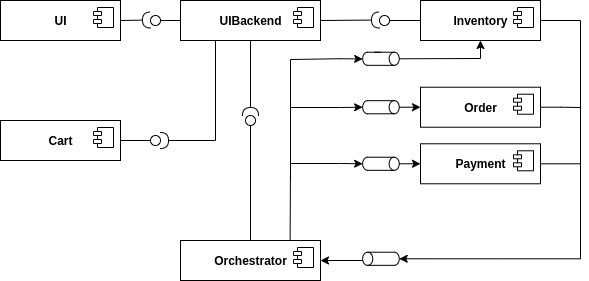

Architecture Overview¶
The T2 store consists of seven services:
- UI : The application frontend.
- UIBackend : API Gateway.
- Cart : Manages user’s shopping carts.
- Orchestrator : Orchestrates the saga.
- Order : Persists orders to a database and marks them either as success or as failure.
- Payment : Handles the store’s payment by contacting an external credit institutes.
- Inventory: Manages the store’s products.
All components, except for the UI and its back end, who have no database at all, have their own databases. The communication is either over HTTP or messaging. The UI and its back end communicate with HTTP calls. All participants of the saga as well as the orchestrator communicate among each other with messages.
The T2 store realises the following business process:
The transaction is implemented as an orchestrated Saga using the Eventuate Tram framework. The T2 Store makes use of the Eventuate CDC Serivce to realise the Transactional Outboxing Pattern required by the Saga.
In more detail, and including the CDC service, the T2 Store’s architecture looks like this:
(arch sketch including CDC and mom)
The Saga¶
The T2 Store’s saga looks like this:
| Step | Service | Transaction | Compensation Transaction |
|---|---|---|---|
| 1 | Inventory | cancelReservations() | |
| 2 | Order | createOrder() | rejectOrder() |
| 3 | Payment | doPayment() | |
| 4 | Inventory | commitReservations() |
The doPayment() step is the saga’s pivot transaction. If this step succeeds, the saga runs to completion.
The step commitReservations() is designed to be retriable. It will succeed eventually.
The same applies to the compensations rejectOrder() and cancelReservations().
Every order is persisted, those that succeeded as well as those that failed. An order consist of some irrelevant details and the order state. Upon creation the order state is set to “success”. As all order should be persisted, the compensation of creating an order is to set its state to “failed”.
Currently an order cannot be cancelled after submission to the orchestrator.
The inventory manages the number of available units per products.
If the inventory decreases the number of available units per product after placing the order, the product may be unavailable because another user bought to many units of a product.
To prevent such failures the ordered units of a product are locked as soon as they are placed in the shopping cart.
As result there is only the compensation to delete the reservation, but no saga step do make them. Alternatively one could also remove the compensation, attach a time to life to each reservation and delete reservation once the time to life runs out. The step commitReservations() handles served reservations.
The Services¶
All Services are implemented as Spring Boot Applications.
They are structured like this:
(a package diagramm with app, repositories, saga, exceptions)
(read like this: order has an app, saga and repository package)
app package¶
- Application : annotated with @SpringBootApplication.
- Service : contains the logic of the service.
- Controller : defines http endpoint of the service. This class is only present, if the service needs http endpoints.
config package¶
If the configuration is a bit complicated, it is seperated from the Application class. E.g. for the saga participants inventory and payment there are two differen configurations, one that configures the service to be a saga participants and one that configures the service with out the saga things.
saga package¶
For the participants:
- CommandHandler : handles incoming messages.
For the orchestrator:
- Saga : definition of the saga
repository package¶
- Item : the item to be persisted
- Repository : an Interface that extends spring boots Mongo Interface (TODO: link)
exceptions package¶
Any kind of service specific exceptions can be found here.
domain package¶
Any classes that represent something domain specific. Most domain specific things are used by multiple services and thus located in the common package, however things that onyl one service needs are located here.
For more Details on each service lookie here:
TOOD delete the toc.
services:
others: